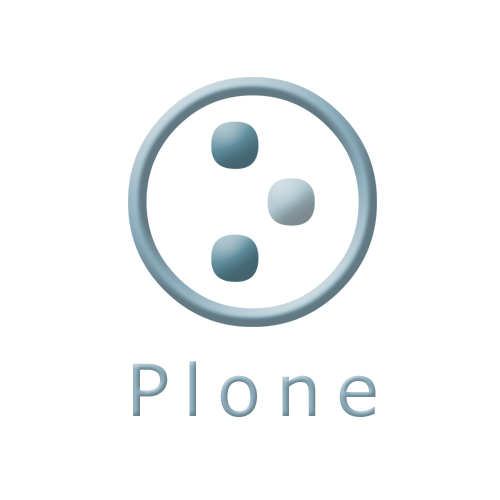

Plone 的初探與操作

自由軟體鑄造場即將在十一、十二月份，假聯成電腦中心，針對大專院校資訊系所的學生，安排一系列的自由軟體技術教學工作坊。為了確實落實學習的品質，現場採一人一機實機操作，每班二十人即額滿。
首先在 11/25、11/27 登場的課程是【Plone 的初探與操作】，Plone 是一套網頁式內容管理系統 (Web Content Management System, Web CMS)。簡單地說，Plone 就是一部「快速架站機」，有了這套軟體，不熟悉技術的人，也能輕鬆地管理網會員和內容，類似的工具例子有 XOOPS、Wordpress、Drupal、Joomla! 等。
本課程共有六小時，由軟體自由協會 監事胡崇偉 (marr) 擔任本次課程的講師， marr 目前是一位 Python 程式語言愛好者。專長是技術文件撰寫、Linux系統整合、數位學習系統。詳細的課程內容、時間與地點如下：
◎ 報名網址：https://whoswho.openfoundry.org/workshop/details/1-plone.html